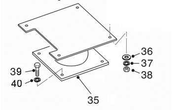

Водительское сиденье и установка
| 1 | Сборка спинки | 10 | Правый защитный кожух | 17 | Устройство регулировки угла | 24 | Реле | 34 | Проводной разъем |
| 3 | Подголовник | 11 | Блокировочный элемент спинки | 18 | Клапан регулировки веса и высоты | 25 | Гофрированный кожух | 35 | Основание сиденья |
| 4 | Кронштейн ремня безопасности | 12 | Ручка регулировки спинки | 19 | Передняя крышка | 26 | Крепление кожуха | 36 | Плоская шайба |
| 6 | Трехточечный ремень безопасности | 13 | Левый защитный кожух | 20 | Задняя крышка | 27 | Направляющая | 37 | Пружинная шайба |
| 7 | Болт | 14 | Переключатель обогрева | 21 | Амортизационный цилиндр | 29 | Сиденье | 38 | Гайка |
| 8 | Направляющая для сиденья | 15 | Левый клапан поддержки поясницы | 22 | Амортизационный воздушный мешок | 32 | Левый поручень | 39 | Болт |
| 9 | Пряжка ремня безопасности | 16 | Ручка регулировки амортизации | 2 | Компрессор | 33 | Правый поручень | 40 | Пружинная шайба |
Рис. 1. Водительское сиденье в разобранном виде
Общие сведения
Цифры в круглых скобках показаны на рисунке 1.
ПРЕДУПРЕЖДЕНИЕ
По закону автомобиль должен быть оснащен ремнем безопасности, следует пристегивать ремень безопасности во время движения автомобиля.Водительское сиденье крепится к полу кабины с помощью болтов (39) и пружинных шайб (40). Комплект сиденья включает в себя подушку (29) и спинку (1), которые установлены на раме сиденья. Рама сиденья установлена на базовом основании сиденья (35) плавающим способом. Плавающий механизм работает только тогда, когда на нем сидит водитель. Когда сиденье не используется, оно опускается в самое нижнее положение для удобства подхода.
Растягивающийся трехточечный ремень безопасности (6) прикреплен болтами к верхней части сиденья, и его можно быстро отстегнуть с помощью пряжки.
ПРЕДУПРЕЖДЕНИЕ
Запрещается регулировка сиденья или ремня безопасности во время движения автомобиля, в противном случае это может привести к потере контроля над автомобилем. Регулировка должна производиться после полной остановки автомобиля и включения стояночного тормоза.Снятие и разборка
Цифры в круглых скобках показаны на рисунке 1.
1. Остановить автомобиль на ровной площадке, включить стояночный тормоз, выключить двигатель.
2. Неоднократно поворачивать рулевое колесо влево и вправо, сбросить давление в системе рулевого управления. Подложить клинья под колеса.
ПРЕДУПРЕЖДЕНИЕ
Следует подложить клинья под колеса надлежащим образом, убедиться в надлежащей надежности упорных клиньев и достаточной грузоподъемности подъемного оборудования, обеспечить безопасность работы во избежание телесных повреждений и материального ущерба.3. Отсоедините разъем проводки компрессора сзади сиденья.
4. Используя подходящее подъемное оборудование, привяжите сиденье, открутите болты (39), установленные на полу кабины, пружинные шайбы (40) и выньте сборку сиденья из автомобиля.
5. Снимите гайки (38), фиксирующие основание сиденья (35) и сборку сиденья, плоские шайбы (36), пружинные шайбы (37) и снимите основание сиденья (35).
6. При необходимости снимите выступающую кнопку, опустите защитный чехол (25), обнажив подвеску сиденья.
7. При необходимости снимите крепежные элементы амортизатора (21) и извлеките амортизатор (21).
Проверка
Номера позиций в скобках совпадают с номерами позиций на рис. 1.
1. Проверьте воздушные трубопроводы, регулирующий по высоте весовой клапан (18), амортизационный цилиндр (21), компрессор (23) и воздушную пружину (22) на наличие утечек или повреждений. При необходимости произведите замену.
2. Проверить все кронштейны и каркас на наличие разрывов или повреждений, своевременно отремонтировать или заменить по мере необходимости.
Сборка и установка
Цифры в круглых скобках показаны на рисунке 1.
Примечание: Затяните все крепежные элементы в соответствии с разделом 300–0080 "Технические условия для стандартных болтов и гаек".
1. Если был снят, установите компрессор (23) обратно на подвесное кресло.
2. Если был снят, закрепите амортизационную цилиндр (21) на подвесное кресло с использованием снятых крепежных деталей.
3. При необходимости наденьте защитный чехол (25) на подвесное кресло и установите выступающую кнопку на место.
4. Закрепите основание кресла (35) к сборке кресла с использованием гаек (38), плоских шайб (36) и пружинных шайб (37).
5. С использованием подходящего подъемного оборудования разместите сборку кресла на полу кабины и закрепите болтами (39) и пружинными шайбами (40).
6. Снова подключите разъем компрессора сзади кресла.
7. апустите двигатель, чтобы включить систему зарядки, нажмите кнопку регулировки высоты веса (18) для накачивания подвески кресла и проверьте, соответствует ли высота кресла требованиям.
8. Убрать упорные клинья из-под колес.
Техническое обслуживание
Цифры в круглых скобках показаны на рисунке 1.
1. Уход за сиденьем (29) и спинкой сиденья (1) очень важен, так как песок и мелкая гравий, оседая на поверхности, могут вызвать царапины.
2. Для очистки сиденья (29) и спинки сиденья (1) используйте теплую воду и мягкое мыло. Сначала протрите поверхность сиденья мягкой тряпкой, смоченной в растворе мыла, затем смойте пену влажной тряпкой и, наконец, протрите поверхность сухой тряпкой.
3. Водитель должен регулярно проверять ремень безопасности (6) сиденья. Если крепеж поврежден, ремень порван или истирался, пряжка не работает или ремень потерял свою упругость из-за воздействия ультрафиолета, ремень следует немедленно заменить.
Внимание:
ремень безопасности следует менять не реже чем каждые три года.
Кабина – водительское сиденье и установка
260-0090
Кабина – водительское сиденье и установка
260-0090
2
3
Кабина – водительское сиденье и установка
260-0090
Иллюстрации
